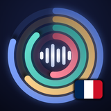
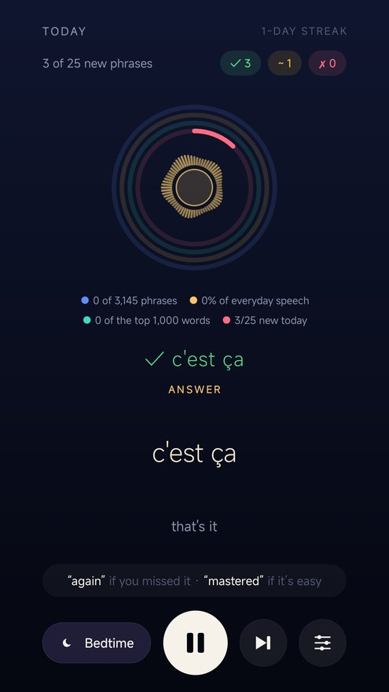
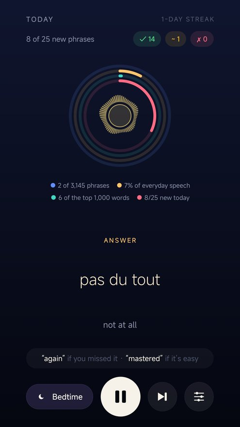

French Drive
French Drive teaches spoken French while your hands and eyes are busy: driving, walking, cooking. You hear a phrase in English, say it in French out loud, then hear a native speaker say it. It listens for your answer and moves on by itself, so your phone can stay in your pocket.
Get French Drive

What's in it
- Over 3,000 phrases, in the order you'll actually hear them: built from how often words come up in real spoken French, so the most useful come first.
- Everyday French as people really speak it, not textbook French: the fillers, the reactions, the dropped ne, and the slang you need to understand.
- Every main tense, the conditional and the subjunctive, in short phrases you'd really say.
- Dialogues, then longer passages heard at natural speed, built up slowly and in chunks until you can follow them.
- 3,145 phrases, 7 dialogues and 40 longer passages.
Before you start: give your first sessions at least 30 minutes of gentle focus.
The first few minutes can feel overwhelming. That's completely normal, so please don't give up then: stick with it for the full half hour and it starts to fall into place.
Don't worry at all if it feels like nothing is going in. That's normal, and it's fine. Just relax completely and trust the app to do the work: it brings every phrase back at the right moment, again and again, until it sticks. You don't need to try hard, take notes or remember anything on purpose. Just listen, have a go out loud, and keep going.
Get it
It's for Android phones, and it's in testing on Google Play, so it takes three steps instead of one. Use the same Google account that your phone's Play Store uses.
- Join the testers group: french-drive-testers. Tap "Join group".
- Become a tester: open the test page and tap "Become a tester". If it says the app isn't available, wait a few minutes after joining the group and open it again.
- Install: French Drive on Google Play.
- Open it once and allow the microphone and notifications.
- Practise the three command words in Settings before your first session: tap one to hear how it's said, then say it yourself and the app shows whether it understood you.
The three words to know
Say these instead of an answer, or straight after one:
- Didn't know it, or got it wrong? Say aucune idée. It teaches it again and brings it back soon. There's no penalty: missing things is how the app knows what to practise.
- Too easy? Say fastoche and it won't come back so often.
- Want to hear it again? Say répète.
How it works
- Press play. You hear a phrase in English.
- Say it out loud in French. Have a go even if you're not sure: guessing is part of learning.
- Hear a native speaker say it. Repeat it after them if you like. The app listens for your answer and moves on by itself.
New phrases come one or two at a time, mixed in with ones you've already met. Each phrase comes back at growing gaps, just before you'd forget it. That's why you don't need to try to remember: the app does the remembering for you.
Later on you'll hear short conversations and longer passages at natural speed. They're built up slowly and in chunks first, and they only play once you know every word in them.
In the car, or with headphones
- It works over Bluetooth and with your steering-wheel or headphone buttons: previous means you missed it, next skips ahead.
- Keep your eyes on the road: everything works by voice and buttons, so you never need to look at the screen.
Settings worth knowing
- Pace: how many new phrases a day. If it feels like too much, turn it down. You'll learn more from fewer phrases that stick.
- Level: where new material starts, if you already know some French.
- Bedtime: a short last round of the day's trickiest phrases, then it stops.
Private and offline
No account, no ads and no internet needed. Everything runs on your phone, including the speech recognition. Your progress stays on your phone and is kept through updates.
 Slovak Drive
Slovak Drive